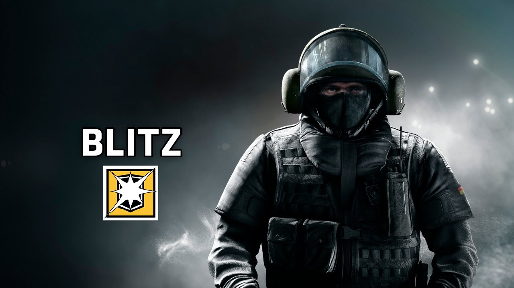

Operatör Videosu:
Sledge,elinde balyozu ile her yeri kolayca kırabiliyor. Eğer hızlıca bir yerleri kırıp takımınıza yol açmak istiyorsanız Sledge karakterini sizlere öneririm.
Operatör Videosu:
Thermite karakteri ile normalde kırılamayan (reinforce) duvarları kırabiliyorsunuz. Kıracağınız duvara sadece karakterde bulunan patlayıcıyı döşeyip aktif etmeniz yetiyor. Ani atak ve baskınlarda beklenmedik başarılar elde edebiliyorsunuz. 9 Mayıs 2016'da gelen güncellemeye göre her iki patlayıcı da duvara koyup aynı anda patlatabiliyor ve artık el bombası taşımıyor.
Operatör Videosu:
Ash karakterinin bayan olması sizi yanıltmasın. Kendisi özel silahı ile çok güçlü bir saldırı askeri oluyor. Duvarlara attığı matkap türü bir top ile duvarı çatlatıp yıkabiliyor. Uzaktan hasar vermek istiyorsanız bu karakteri kullanabilirsiniz.
Operatör Videosu:
Thatcher karakterimiz oldukça önemli bir karakter. Düşmanların kurmuş olduğu tuzak veya düzenekleri yok edebiliyor. Bunun için özel bombasını kullanıyor. 9 Mayıs 2016'da gelen güncellemeye göre tuzak ve düzenekleri yok etme menzili azaldı.Yani tuzak biraz menzilden uzak olunca tuzağı yok edemiyor. Bu üzücü bir durum fakat üzülmeyin. Bomba patladığında flashgrenade görevi görüyor ve oradaki adamları kör edebiliyor.

Operatör Videosu:
Twitch karakterimiz oldukça tehlikeli bir özelliğe sahip. Bu karakter özel bir drone ile yani kameralı hareketli aracı ile düşmanı şoklayabiliyor. Bu sayede takım arkadaşlarına baya yardımcı olduğunu görüyoruz.
Operatör Videosu:
Montagne karakterimiz ağır kalkanlı bir operatör. Bu karakter özel yeteneği sayesinde boydan boya kendisin kalkan ile koruyabiliyor. Bu sayede takım arkadaşlarına öncülük ediyor. 9 Mayıs 2016'da gelen güncellemeye göre kalkanı sağdan, soldan ve üstten kapatıldı ve Montagne artık daha iyi korunabiliyor.

Operatör Videosu:
Blitz karakterimizde aynen Montagne gibi kalkana sahip ve armoru yüksek. Bu karakterin kalkanında flash dediğimiz düşmanları kör eden bir özelliği var. Bu sayede düşmanları kör edip ani ataklar ile kolayca ilerleyebiliyorsunuz.
Operatör Videosu:
Glaz karakteri bildiğiniz keskin nişancı. Bu karakter ile uzaktan etkili hasarlar yapabilirsiniz. Özellikle dışarda ev,ofis,depo içerisini görebileceğiniz birçok nokta var. Bu sayede düşmanları pencereden kolayca vurabilirsiniz.
Operatör Videosu:
Fuze karakteri etkili bir karakter fakat kullanırken dikkatli olmak gerekiyor. Duvara yerleştirdiği alet ile duvar arkasına seri şekilde patlayıcılar atıyor. Düşmanlara çok hasar verebileceğiniz gibi özellikle hostage (rehine) bölümlerinde dikkat etmenizde fayda var.
Operatör Videosu:
IQ karakterimiz de oldukça takım için yararlı. Bu karakter ile düşmanların gizlice yerleştirmiş olduğu bomba,patlayıcı ve tuzakları görebiliyorsunuz.9 Mayıs 2016'da gelen güncellemeye IQ'nun aleti tuzağın tam olarak ne olduğunu gösterebiliyor.
Operatör Videosu:
Smoke karaketirimiz adı üstünde bombalarda usta bir operatör. Sis bombası ve zehirli gaz bomba atarak karşı takımı yani düşmanı yavaşlatıp hatta zehirli gaz bombası ile düşmanları öldürebiliyor.
Operatör Videosu:
Mute karakterimiz ile düşman takımının elektronik cihazlarını etkisiz hale getirebiliyoruz.Yere koyabildiğimiz jammer (sinyal kesici) cihaz düşman tarafından patlatılmaz ise oldukça işe yarıyor.
Operatör Videosu:
Castle karakterimiz bildiğimiz duvar görevi görüyor. Kapı ve pencerelere normal barikatlardan ziyade daha güçlülerini takabiliyor. Bu sayede takım arkadaşlarınızı oldukça iyi koruyorsunuz.
Pulse karakteri sadece kendisine özel olan ısı sensörlü cihazı ile belli mesafedeki düşmanları gösteriyor. Düşmanlar beyaz bir alan içinde beliriyor. Düşmanları gördüğünüz anda takım arkadaşlarınıza söylemeyi unutmayın.
Operatör Videosu:
Rook karakterimiz armoru yüksek bir operatör. Bu karakterimizin özelliği yere takım arkadaşlarınız ve kendiniz için çelik yelek (armor) koyabiliyorsunuz. 5 adet armoru yere koyduktan sonra takımınıza söylemeyi unutmayın.
Operatör Videosu:
Doc,adı üstünde doktor. Bu karakter ile takım arkadaşlarınızı yüksek hasar gördüğünde ve ölmek üzereyken canlandırabiliyorsunuz. Kendisine ait özel bir iğnesi bulunuyor.
Operatör Videosu:
Kapkan karakteri tuzak kurmada usta bir karakter. Bu karakter ile kapı ve pencerelere tuzaklar kurup düşmanların bu tuzaklara düşmesini bekleyebilirsiniz.
Operatör Videosu:
Tachanka,üzerinde taşıdığı ağır taramalı silah düzeneğini yere kurup düşmanlarına korku salan bir karakter.
Operatör Videosu:
Jager,duvarlara kurduğu bir alet ile düşman bombalarını daha patlamadan etkisiz hale getirebiliyor.Takım için oldukça işe yarar bir karakter olduğu kesin.
Operatör Videosu:
Bandit karakterimiz ile yerlere elektrik döşeyerek düşmanları şok edebiliyoruz.Kimi için gereksiz bir karakter gibi gözüksede iyi oynayanlar bu karakterin ne kadar önemli olduğunu bilirler.

Operatörlerin Videosu:
Rainbow Six Siege bu sezon 2 yeni operatör ve bir yeni harita ile karşımıza çıkıyor. Haritanın ismi "Yacht" ve artık her sezon 2 yeni operatör ve bir harita ile sizleri bekliyor olacak. Şimdi yeni gelen karakterlere bakalım.
BUCK
Bir attack (hücum) karakteri olan Buck'ın en önemli özelliği,
ana silahının altında pompalı tüfek aparatı bulunması.
Bu sayede tek bir tüfekle hem etrafı tarayabilecek, hem de yakın mesafeden
öldürücü vuruşlar yapabilecek.
FROST
Bir defend(savunma) karakteri olan Frost'un en önemli özelliği,
ayı kapanına benzer bir tuzağa sahip olması ve bu sayede düşmanları bir anda etkisiz hale getirebilmesi.
Muhtemelen bu tuzaktan kurtulmak biraz zaman alacak ve bu sırada
düşmanı kolayca vurup öldürme ihtimali bir hayli yüksek.
NOT: Bu karakterler "Rainbow Six Siege Season Pass" alanlar için 2 Şubat 2016 tarihinde, "Rainbow Six Siege PC" alanlar için ise 9 Şubat 2016 tarihinde çıkmıştır.

Operatörlerin Videosu:
2. sezon bu yeni gelen karakterlerle ve gene yeni gelen bir haritayla başladı ve işler artık iyici kızışıyor. Bu karakterlerin özellikleri ise oyunu bir hayli zorlaştıracak. Şimdi karakterlerin özelliklerine bakalım.
BLACKBEARD
Adı üstünde kara sakal ve ağırlığı ile ön plana çıkacak olan bu operatör ise
Attack (Saldırı) ekibine dahil oluyor.
Silahının namlusunun iki yanında kalkana sahip olan bu operatör ise ince noktalardan
vurmak için tasarlanmış. Böyle bir özelliğe sahip olması kendisini saldırı
ekibinin en önde gidecek olan operatörlerden biri haline getiriyor.
Ayrıca kendisinin kullandığı bu Rifle sınıf silahın dışında bir de Desert Eagle tabancaya sahip.
VALKYRIE
Bu operatörlerden ilki Valkyrie isimli kadın karakter ve kendisi Defender (Savunma)
operatörlerine ekleniyor. SPAS-12 Pompalı silahı olan ve karizmanın dibine vurmuş
olan bu ablamızın özel yeteneği ise savunma sınıfında olduğu halde yapışkan kameralara sahip olması.
Bu yapışkan kameraları kullanarak rakiplerin tüm stratejilerini ve saldırı ekibinin
bütün morallerini alt üst etmek için geliyor.
Bu kameralar herhangi bir yüzeye, herhangi bir yere yapıştırılabiliyor olacak ve
bu kameralara savunma ekibi yani takım arkadaşları da erişebilecek.
En önemlisi ise bu kameralar binanın dışına da yapıştırılabiliyor.
NOT: Bu karakterler "Rainbow Six Siege Season Pass" alanlar için 9 Mayıs 2016 tarihinde, "Rainbow Six Siege PC" alanlar için ise 16 Mayıs 2016 tarihinde çıkmıştır.